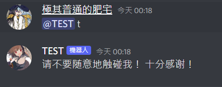
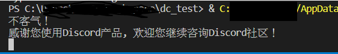
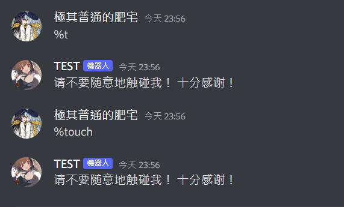

首先先用一個最基本的機器人來示範。請打開一個python檔並鍵入以下內容:
1 | from discord.ext import commands |
接下來分行解釋下。
bot = commands.bot(‘%’)
造出一個bot的物件。而那個'%'就是呼叫機器人的前綴。不一定要一個字，你要拿'peko'當前綴也是完全可以的。
小補充，如果你也想要用標記機器人來呼叫機器人的話可以這樣寫:
1 | bot = commands.bot(commands.when_mentioned_or('%')) |
效果會像這樣:

bot裡面詳細有什麼功能可以看一下官方API的文件看不懂也沒關係，後面會帶到一些常見的用法。
@bot.event
這個@叫decorator，是python的語法糖。簡單來說這東西會把下面的函數丟到你@的函數裡面加工，詳細可以看一下這篇。官方API的解釋則在這裡。
看不懂也沒什麼關係，就當作一種固定語法。記得在你寫的函數前面加上對應的decorator就行。像這邊就是因為要使用底下的on_ready()所以才會在上面加@bot.event的，可以看下官方API
另外如果點進去官方API的話可以發現他的例子是加了@client.event。使用discord.clinet是另一種Discord機器人的寫法，client的語法基本上把client代換成bot都可用。不過bot(discord.ext.commands.Bot)似乎功能比較多一點加上兩者不能混用所以我都用bot寫。一言以蔽之，看到範例是用clinet就換成bot試試看吧。
async def on_ready():
這邊的async和await是python異步執行套件asyncio的語法。
不過這邊難的地方都寫在discord套件底層了，所以我們只要記得在函數前面加async跟在discord提供的方法前加await就行。
on_ready()這個方法，其功能是在機器人上線的那刻執行下列內容。所以如果機器人成功運行了可以看到命令列有以下的輸出。

這樣可以方便我們確定機器人是不是正常上線了。
@bot.command(aliases=[‘touch’])
@bot.command()這個語法糖可以將下面的函數變成我們在頻道可以使用的指令。預設指令名稱就是下面的函數名。以這個例子來說就是t
括號中間的aliases=['touch']則是為這個函數添加更多指令名的。所以結合我們在上面的bot = commands.bot('%')設定的前綴，機器人上線後我們用%touch和%t都可以叫出一樣的指令。
async def t(message):
如上所述，函數名就是你在頻道打的指令名。
括號裡面的message基本上就是你在discord發的訊息。但他不僅僅是文字，而是discord api一個’Message’類別的物件。
裡面的功能相當的豐富，可以從中取出相當多的資訊，下面會做說明。
await message.channel.send(‘请不要随意地触碰我！ 十分感谢！’)
像這邊我們就從中取出了你發送指令的頻道並在那頻道發送了訊息。具體而言看起來像這樣。

其他更多的用法一樣可以詳閱官方API的公開說明書
if __name__ == “__main__”:
這行就是確保你是直接執行了這檔案才會跑以下的指令。
bot.run()的括號中間輸入您昨天取得的token碼。
接著就讓機器人上線並邀請你的機器人進自己的伺服器來玩玩吧。也可以試著改一些設定，或甚至嘗試一些你在官方API找到的功能。看不太懂上面和官方API到底在講什麼鬼的也沒關係，後面跟著做就會漸漸熟悉了。